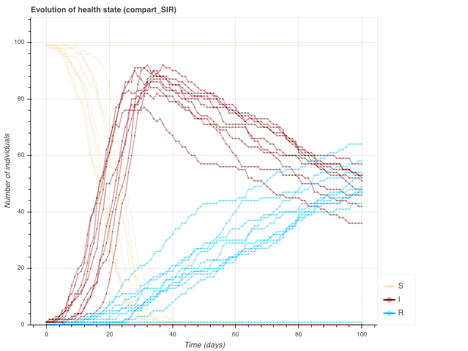
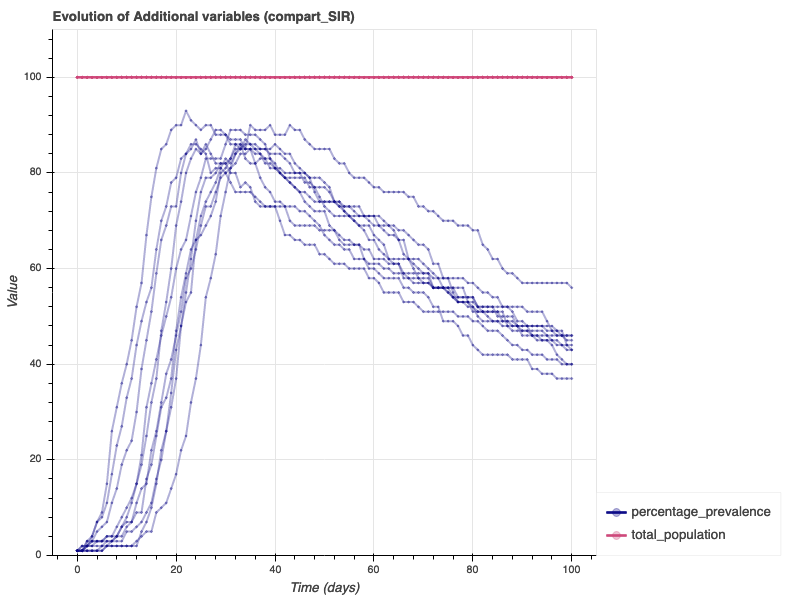

3. Getting started with EMULSION¶
We assume in what follows that you have downloaded and unzipped the models directory provided on EMULSION website.
3.1. Running EMULSION¶
To simulate an EMULSION model (named e.g. MODEL), open a terminal
in the directory where your files are located, and type the following
command:
emulsion run --plot MODEL.yaml
Option --plot automatically opens your web browser to show
simulation outcomes. To view diagrams representing model structure,
append option --view-model to the previous line.
As an example, open a terminal in the directory models/features and type:
emulsion run --plot compart_SIR.yaml --view-model
The simulation results will pop up in your web browser:
You can also check the results of a more complex model, e.g. quickstart,
tested at install.
When running a model, EMULSION:
- Reads file
MODEL.yamlwhich describes the model- With options
--view-model, builds the diagrams representing model structure and stores them in the figure directory (default:img/)- Runs N (default: 10) stochastic repetitions of model simulation during T (default: 100) time steps
- Stores simulation outputs in a CSV file
counts.csvlocated in the output directory (default:outputs/)- With option
--plot, produces a web page with a basic representation of the outputs (and model structure if--view-modelwas also set) which is stored in the figure directory, under the nameMy_model_name.html(My_model_namebeing the name of the model as defined inMODEL.yamlby the instruction:model_name: My_model_name)
Most frequently used options are:
-r N- produce N stochastic repetitions
-t T- run the simulation for T time steps
--silent- show a progress bar only for the progression of repetitions (instead of a progress bar per repetition).
--output-dir OUTPUT- change output directory (the location of
counts.csvproduced by the simulation) toOUTPUT --figure-dir FIG- change figure directory (the location of model diagrams and
outputs web page) to
FIG
(Other options are available with emulsion -h.)
3.2. Producing model diagrams¶
When running a model, you can use options --plot and
--view-model to plot simulation outcomes and model diagrams,
respectively.
To generate model diagrams without having to run the model, just type for instance:
emulsion diagrams compart_SIR.yaml
By default, diagrams are generated in SVG format (in the figure
directory, by default img). You can change format to PNG or PDF
with option --format, e.g.:
emulsion diagrams compart_SIR.yaml --format pdf
3.3. Viewing parameters¶
EMULSION command can also show the actual values of model parameters:
emulsion show compart_SIR.yaml
in the following list (“MODEL parameters”):
EmulsionModel "compart_SIR"
AVAILABLE PARAMETERS (with their current value)
------------------------------------------------------------------------
MODEL PARAMETERS
------------------------------------------------------------------------
total_duration.................................................100.0
initial_population_size........................................100.0
initial_infected.................................................1.0
transmission_I...................................................0.5
recovery.........................................................0.1
delta_t..........................................................1.0
------------------------------------------------------------------------
You can also ask for the role of the parameters:
emulsion describe compart_SIR.yaml recovery delta_t transmission_I
results in the following list (“MODEL parameters”):
EmulsionModel "compart_SIR"
ROLE OF PARAMETERS (AND CURRENT DEFINITION)
------------------------------------------------------------------------
recovery [parameter]:
recovery rate (/day)
0.1
delta_t [parameter]:
duration of the simulation time step
1.0
transmission_I [parameter]:
transmission rate from infectious animals (/day)
0.5
------------------------------------------------------------------------
3.4. Changing parameters¶
Now, to run the model with other parameter values without changing the
model file, you can specify the new values with option -p
PARAM=VALUE (one for each parameter to change), for instance:
emulsion run --plot compart_SIR.yaml -p transmission_I=0.3 -p recovery=0.01
which produces:
 3.5. Changing the model¶
To change model structure and assumptions, open the file in a text
editor. For instance, to change the above SIR model into a SEIRS
model, open compart_SIR.yaml and save it as a new file,
e.g. compart_SEIRS.yaml. You have to add a state (E), modify
existing transitions and add new ones, and introduce new parameters
(to represent the incubation and the waning of immunity).
Add a latent (or exposed) state: search for the
health_statestate machines and change the states and transitions as follows:state_machines: health_state: desc: 'The state machine which defines the evolution of health states' states: - S: name: 'Susceptible' desc: 'suceptible of becoming infected' fillcolor: 'deepskyblue' - E: name: 'Latent' desc: 'infected but not yet able to transmit the disease' fillcolor: 'orange' - I: name: 'Infectious' desc: 'infected and able to transmit the disease' fillcolor: 'red' - R: name: 'Resistant' desc: 'healthy again and resistant to infection' fillcolor: 'limegreen' transitions: - {from: S, to: E, rate: 'force_of_infection'} - {from: E, to: I, rate: '1/incubation'} - {from: I, to: R, rate: 'recovery'}
Add the waning of immunity simply by adding the following transition:
- {from: R, to: S, rate: 'waning'}
Add the new parameters to the
parameterssection:parameters: ... incubation: desc: 'mean duration of latent state (days, assuming exponential distribution of durations in the state) ' value: 5 waning: desc: 'rate at which individuals lose immunity (/day)' value: 0.05
Do not forget to update the calculation of prevalence, which is an expression also defined in the
parameterssection:parameters: ... 'prevalence (%)': desc: 'proportion of infected+infectious individuals' value: '100 * (total_I + total_E) / total_population'
You’re done ! Test your model with emulsion command as in previous
examples:
emulsion run --plot compart_SEIRS.yaml --view-model --silent
which produces also a new diagram:
3.6. Going further…¶
Check our examples
EMULSION provides a large number of modelling features. To go further on using EMULSION to design models according to your needs (even complex), jump to next sections:
- Modelling principles to get insights on key EMULSION concepts
- Modelling language (basics) to have an overview on how EMULSION models are structured and to be able to write your first models
- Modelling language (advanced) to learn more on EMULSION features
- Feature examples to discover representative epidemiological models and how they are handled with EMULSION.